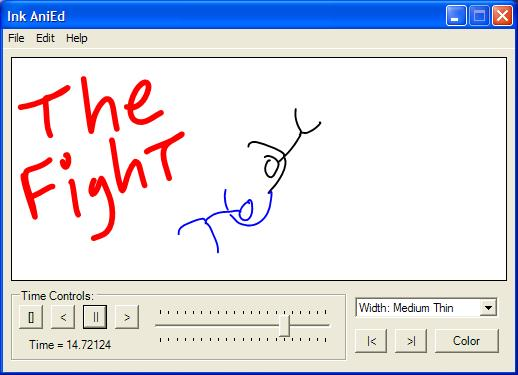

| | AniEd is an animation tool based on the Microsoft Ink API, using the .Net Framework, and designed for the TabletPC. Essentially it lets you create animations as fast as you can draw the few simple key frames which make them up. Simply dra
w one frame, adjust the time, draw another frame, and the system will make a "calculated geuss" as to what the frames in between look like. This makes it extemely easy to create great looking animations with a couple flicks of the wrist. More informatio
n can be found in the ReadMe which is also a sort of essay on the project. The full source code written in C# (which was designed to be easily put into other .Net apps) comes with the program. AniEd won the Grand Prize (a free Tablet PC) for Best PowerToy at Tablet PC Developer.com, has an article about it at The Code Project and has been featured at Tablet PC Buzz.com and Tabula PC Pocket AniEd is the port of Ink AniEd to the Pocket PC and .Net Compact Framework. While the majority of the code was rewritten and the user interface redesigned, this application still allows you to rapidly create animations with the flick of your wrist, except on a smaller screen. It can also export SVG animations. Now you can export your animations as SVG files (SVG is sort of like Flash but you can edit it in Notepad and easily include it in webpages, PowerPoint, etc.)! Read mere here. More Of My Tablet PC Applications... DownloadIf you appreciate this application, a small donation to support me writing more interesting apps like it (and not get a job writing accounting software) would be greatly appreciated. InkAniEd.zip
Version: 1.2
Platform: .Net Framework with Ink
Note: This is the executable,
4 example animations, the ReadMe and the
full source code.
|
AniEd.exe
Version: 1.2
Platform: .Net Framework with Ink
Note: This is all you need,
but the examples and source can be useful.
|
Read Me - This is both the read me for the program and an essay on it
UPDATE - 5/11/2004 - Version 1.2 Released which includes the following changes:
- Added SVG output so now animations created in Ink AniEd can be quickly and easily placed into webpages or viewed by themselves on almost all platforms.
- Fixed bug causing window not to resize correctly and numerous other little internal fixes.
UPDATE - 9/12/2003 - Version 1.2 Releasd. This release makes the following changes:
- Added 'High Quality Play Back' in the 'Mode' menu. This is on by default and means strokes drawn in animations are drawn with full quality. However high quality means performance takes quite a hit, if your worried about performance, turn this option off
in the 'Mode' menu.
- Added 'Action' button, same as you get if you right click on selected strokes. This makes working with strokes a lot easier then using the Tablet pen which isn't that easy to right click with.
- Added 'New' command to 'File' menu (same as 'Edit - Clear All' but less confusing).
- Added error message if user tries to overwrite stroke at the same time. Requested by a few people to save destroying a stroke if you forget to change the time.
- Gave the application an icon, albiet a bad one.
- NOTE: The file format was not changed, so there won't be any version errors.
UPDATE - 9/12/2003 - I added two more examples animations to the download package
|
SVG AnimationsSVG (Scalable Vector Graphics) is sort of like Flash but without all the junk. If you can't see the animations on this page, be sure to get Adobe's free SVG viewer and plu
g-in for Internet Explorer (it works sort of like Acrobat but alot smoother). With SVG you can do amazing graphics, animation, interactive systems; and all in Notepad (you don't need expensive Flash design software or some special compilers)! Being based
on XML and a W3C standard, you can easily read and edit it by hand and include it in all sorts of different documents (from HTML, to PowerPoint to even your desktop environment). In fact including the animat
ions Ink AniEd produces is as easy as putting in a single tag into your HTML: <embed src="myanimation.svg"> Below are a some animations to show off a few of Ink AniEd's features. Keep in mind that the whole point of Ink AniEd is rapid animation creation leaning on the Tablet PC pens unique ability to sketch rapidly and effectivly. So it's not
about getting it perfect it's about getting the idea across quickly. To make an SVG files, simply draw or load an animation into Ink AniEd, and select 'File'-'Export as SVG...' and then choose the filename you want to export it as. It's that simple! Hit 'WATCH' to view any of these animations. Or you can download the 'inka' (Ink Animation) file which was used to produce the watchable SVG file. Ink AniEd works with .inka files and merely exports SVG files. If you are interested in using Ink AniEd to create animations for your website, I'm sure you will find the process exceedingly easy. Keep in mind that once you have the SVG file generated by Ink AniEd, you can always open it up and chang
e things around (for instance you'll notice the 'Reset' button in the Ink AniEd logo is in the opposite corner, I changed that in Notepad). You could also make the animation repeat and all sorts of other such tricks. So anyway, take a look at a few SVG related links I put below to help you learn SVG and you should be well on your way. |
Screen Shots
The screen shot above really doesn't do it justice, because this is an animated program. So just download it and it should work on most computers with the .Net Framework. (definatly if you are able to view Windows Journal files) Here are some screens of Ink AniEd at work |
|

{kind=link}
{kind=link}
{kind=link}
{kind=link}
{kind=link}